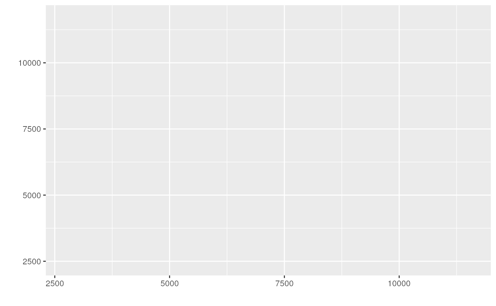

make_escheR() is a generic function to initialize a ggplot object
that contains a spatial map. Because the ggplot object saves the input
spatial transcriptomics data, the transcriptomics data will be used in
the following layering process to add more aesthestic components in the
plot following the grammar of graphics and ggplot2 syntax.
Usage
make_escheR(object, spot_size = 2, ...)
# S3 method for SingleCellExperiment
make_escheR(object, spot_size = 2, dimred = "PCA", ...)
# S3 method for SpatialExperiment
make_escheR(object, spot_size = 2, dimred = NULL, y_reverse = TRUE, ...)
# S3 method for data.frame
make_escheR(object, spot_size = 2, .x, .y, ...)Arguments
- object
a data object that contains the spatial transcriptomics data. Currently only working for spatial transcriptomics data as
SpatialExperimentobjects.- spot_size
A numeric(1) specifying the size of the spot in the ggplot. Defaults to 2.
- ...
Reserved for future arguments.
- dimred
String or integer scalar specifying the existing dimensionality reduction results to use.
- y_reverse
(logical) Whether to reverse y coordinates, which is often required for 10x Genomics Visium data. Default = TRUE.
- .x
the X-coordinate
- .y
the Y-coordinate
References
Guo B, Huuki-Myers LA, Grant-Peters M, Collado-Torres L, Hicks SC (2023). escheR: Unified multi-dimensional visualizations with Gestalt principles. bioRxiv. doi:10.1101/2023.03.18.533302
Examples
library(STexampleData)
# SpatialExperiment Object
spe <- Visium_humanDLPFC()
#> see ?STexampleData and browseVignettes('STexampleData') for documentation
#> loading from cache
make_escheR(spe)

# SingleCellExperiment Object
sce <- SingleCellExperiment(counts(spe))
reducedDims(sce) <- list(
# Example embedding
EG = matrix(seq.int(1, ncol(spe)*2), ncol = 2)
)
make_escheR(sce, dimred = "EG")
# data.frame Object
x <- spatialCoords(spe)[,1]
y <- spatialCoords(spe)[,2]
df <- colData(spe) |> data.frame()
make_escheR(object = df, .x = x , .y = y)